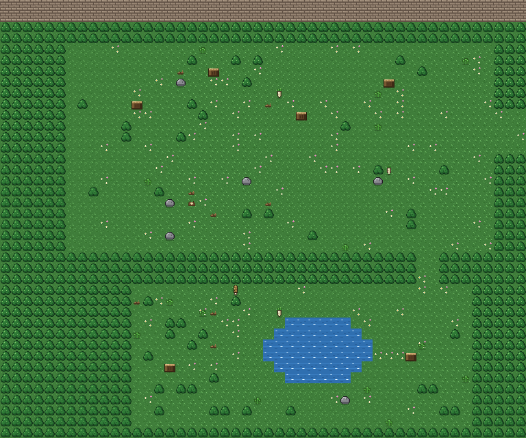
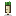
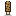
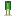
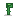
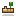
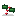
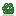

Secret Woods
| Size | 48 by 40 tiles |
|---|---|
| Riding | Ride a horse here |
| Fishing | 1 fish |
A small hidden wood with a quiet pond. Few people come here.

Forage
-
Spring:

Wild horseradish,
Morel,
Wild leek -
Summer:

Fiddlehead fern,
Wild ginger - Fall: Field mushroom, Chanterelle, Wild garlic
-
Winter:
Snowcap mushroom,

Holly sprig,
Winter cress